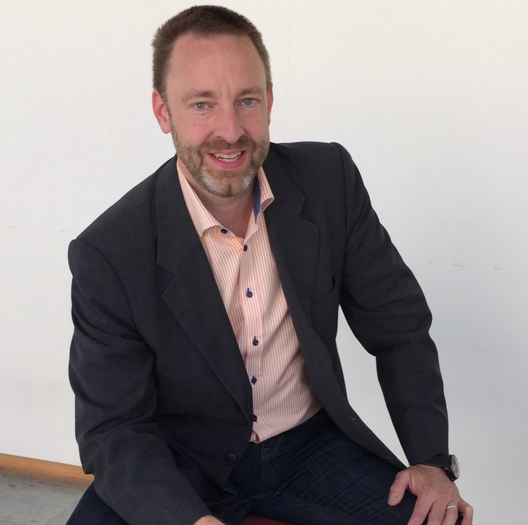
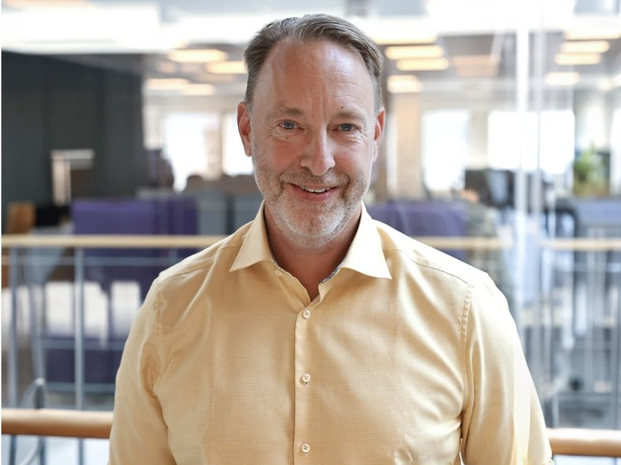

I've helped drive digital transformation since the early 2000s — from building one of Northern Europe's largest private clouds, via AWS, to today driving the work with ALT at Advania, helping organisations approach AI in a completely new way.

I thrive where the pressure for change is greatest — where the demands for clarity and focus are highest, and where you have to create order in complexity rather than wait for it to resolve itself.
The common thread throughout my career is the same: building something new. Often from within an already established organisation, as an intrapreneur rather than a pure entrepreneur — creating something new inside an existing business is its own discipline, and the one I thrive in most.
Today that work is about AI. I'm part of Advania ALT (Advania AI Layer Technology), building a practice that helps our customers approach AI in a completely new way.
From private cloud to AWS to AI — I build what doesn't exist yet.
New things are often best created from within, with existing scale and resources.
I find the path that's actually possible to walk — not the perfect one that never happens.
A journey from early digital transformation, via world-class infrastructure, to today's work in AI.
Got to help drive digital transformation in its infancy. The foundation for how I see change — and how I still work with it today — was laid here.
Together with a team, I built one of the largest private clouds in Northern Europe — infrastructure that may still be running today.
At AWS I got entirely new tools for driving efficient growth in a hyper-fast environment. This is where the foundations of today's AI development were laid — and I got to help build them.
I'm helping drive the AI evolution, where the work on ALT — Advania AI Layer Technology — is central. As part of Advania ALT, my mission is to build a practice that helps our customers approach AI in a completely new way. Alongside this, I'm also active in Good Accelerator.
Three principles that guide how I lead myself, my teams, and the changes I drive.
I thrive when the pressure is greatest. That's when clarity and focus matter most — not more options, but the right direction.
Creating something new inside an existing business requires a different kind of leadership than starting from scratch. I'd rather build from within.
Always finding the path that's actually possible to walk — and bringing the organisation along. That's who I am.
For me, leadership is about action, not theory. I'm not a dreamer, I do — and while I dig deep and analyze carefully, that's never an end in itself. Research and reflection are the foundation for making fast, confident decisions, not an excuse to delay them.
Developing other people has been a constant thread throughout my career. It's not about directing from above — it's a genuine interest in seeing people and teams grow, paired with a clear drive to lead, take space, and own the direction. I believe in leadership that creates collective movement: a team or organization that thinks and moves together is stronger than the sum of its brilliant individuals. This matters more than ever in the age of AI — technology should never replace an organization's ability to think for itself; it should strengthen it.
I see myself as a broad and deep practitioner rather than a surface-level generalist. I want to genuinely understand things — whether technology, business, or people — and I'm willing to invest the time to build real competence rather than settle for superficial knowledge. At the same time, I'm pragmatic: knowledge has to translate into action.
Ultimately, the way I work combines thoroughness with decisiveness: investigate carefully, then act with conviction. That's as true in leadership as it is in everything else I do.
Notes from a recent leadership workshop I ran with Anna Philipson for the Good Accelerator network.
On AI-polished decisions nobody dares question, why growth lives between people rather than in personal efficiency, and the three things leadership can never hand to an algorithm.
Read the full piece ↗Where the work on ALT is central to everything we do with our customers.

As part of Advania ALT, my mission is to build a practice that helps our customers approach AI in a completely new way — not as a single project, but as a capability built into the whole organisation.
The experience I bring from building world-class infrastructure and from AWS in its most expansive phase is the same experience I draw on today: how to drive efficient growth and change in a hyper-fast environment — except the environment is now called AI.
What we build is sovereignty, end to end — real control over your data, your models, and the infrastructure they run on.
Who controls the data, models, and infrastructure your AI runs on has become a board-level question for Nordic and European organisations — not a compliance footnote. It's built into how we design ALT from day one.
Read the full piece ↗The introduction to ALT you can listen to here is narrated by an AI clone of my own voice. It took minutes to create, not a studio session — a small, personal example of how close AI has brought us to fully synthetic media.
Your voice today. Your own avatar tomorrow — that's already possible too, just still a little too expensive for everyday use. That won't last long.
Beyond driving the work with ALT, I'm active in the public conversation on AI, leadership and change management — as a speaker, panellist and advisor, including through Good Accelerator, a network I'm part of alongside my work at Advania.
An article I wrote for Betsson Group on building genuine customer-centricity into how an organisation works.